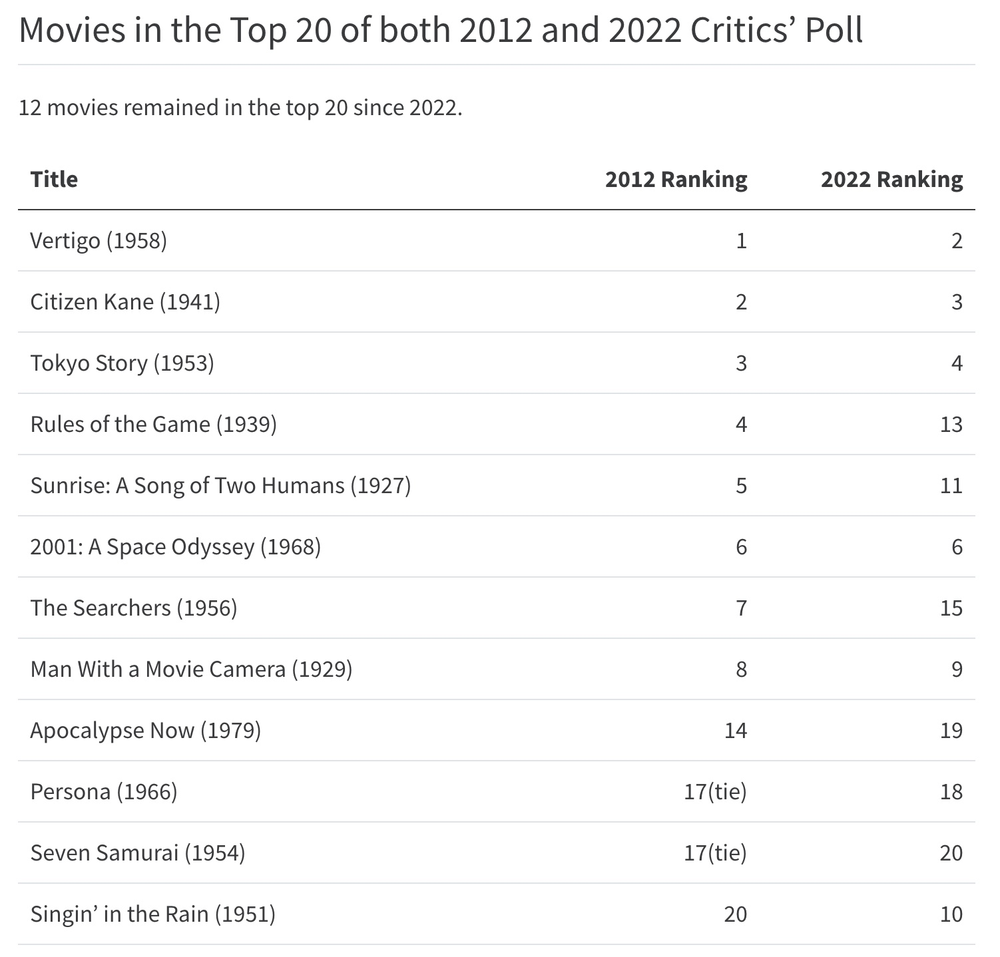

Find the Sight and Sound 2022 rankings here: https://www.bfi.org.uk/sight-and-sound/greatest-films-all-time:
Movie ranking connoisseurs know about Sight and Sound magazine and its 100 Greatest Films of All time lists for 2022, released on Dec. 1. Sight and Sound is the flagship publication of the British Film Institute (BFI). The lists are compiled from its decennial survey of film critics and directors.
Five days later the discussion stays hot, and you may wonder: what does a greatest films survey like this reveal, should we care, and what makes the Sight and Sound lists special?
This year’s critics poll was notable because Chantal Akerman’s 1975 film Jeanne Dielman, 23 quai du Commerce, 1080 Bruxelles was the #1 ranked film, rising from 36th. In addition, eight of 2012’s top 20 were replaced. If you prefer, 12 of the 2012 top 20 were left standing, as were three of 2012’s top four.
The Sight and Sound poll isn’t the usual “best of the year” list, although the BFI produces many of those lists too. It’s infrequent, and the list comes from a survey, not a smoke filled room. This year it included 1639 critics and [lots of] directors, and it appears just once a decade. (I’m focusing on the critics poll here.)
The “all time” conceit, and the survey’s infrequency, promises some immutability. Consider the US News college rankings. When Cal Tech moves from 17th to 1st in one year, you wonder how could a credible survey have missed the mark last year, when you decided to forego Cal Tech in your college plans?. So how can you trust the new results? Can you realistically claim that Godfather Part II was the “31st greatest movie of all time” in 2012, and then drops off the list entirely in 2022? 
But ten years is a long time. Roughly 1/4 of the movies from 2012’s Top 100 critics’ list fell out of it. Which means 3/4’s of the top 100 endured. By and large, the old canon was reasonably well protected in the 2022 poll, which you would never know from the online conversation. The Godfather Part I (1972), as canonical as it gets, actually rose into the top 20. We should expect change because some important movies are relatively new, others may be newly recognized as great, and sometimes the respondent pool changes. When fewer than 1/4 of the critics poll is comprised of women, as in 2012, the surveyors ought to fix it.
The crude aggregation process is a bigger concern, and an inherent one. The balloting process is built for simplicity and freedom for respondents. And freedom abounds. There are no fixed lists or fixed choices. Voters are simply asked to simply identify the “top 10 greatest movies of all time”, unranked. I may choose to include Vertigo, or I may include Citizen Kane, or both, or neither. I could vote for Battlefield Earth, orThe Door. Some critics included a Tex Avery Warner Brothers cartoon.
When you ask opinionated, trained movie hounds about the greatest movie of all time, you get opinionated and idiosyncratic choices. You don’t get a real consensus.
The BFI generously posts individual ballots (universally available for 2022 in January, I’m told). In 2012 they provided a bit of demographic information about respondents (self-declared gender and nationality). In 2022, we can also break out the new voters from the old ones.
I scraped the BFI website and created a dataset with all the voters and all the ballot choices. Here’s what struck me looking at support for Vertigo and Citizen Kane for 2012, and the 846 critics ballots:
Only 191 (22.6%) ballots included the eventual #1 choice, Vertigo, on their lists. That matters because 77.4% did not include the #1 movie (Vertigo) anywhere on their top 10 lists.
It’s not just that 77.4% didn’t think it was #1. The large majority didn’t even think Vertigo was in the top 10.
Only 157 ballots (18.6%) included Citizen Kane, ultimately the 2nd highest ranked film.
Only 299 respondents included either Citizen Kane or Vertigo.
A majority of 547 (64.7%) included neither one. Again, the large majority (almost 2/3) didn’t say “Citizen Kane nor Vertigo weren’t #1”. The large majority said “neither of these is in my top 10!”
Can you imagine a ballot for the American League MVP where 2/3 of the voters thought that neither Aaron Judge nor Shohei Ohtani was in the top 10?
And yet, the aggregation mechanism gave us Vertigo as #1 in 2012, and Citizen Kane every decade before that since the poll began in 1952. The poll simply counts the occurrences of each movie on all the ballots, and the #1 movie is simply the one that appears most often.
The support for all of the movies is spread very thin. In my count, 2,020 individual movies chosen by someone in the 2012 critics poll. Of these, 1,112 were chosen once by just one person.
Critics should also know:
The bottom of each list in the 50-100 range includes a lot of ties, which are artifacts of low scores. We don’t know the tabulations yet, but 2022’s lowest ranked movie that isn’t in a tie is Touki Bouki in 66th place. The movies in places 67-100 are ranked in some kind of tie, and the bottom has a six way tie for 95th place.
In 2012, the bottom 9 movies were tied for 93rd place. Each of these movies got 17 votes, or 2% each. Remember, there are 10 votes per respondent, so there are 8460 different places a movie could appear.
A movie I love, Sátántangó, dropped from 38th place to a six way tie for 78th. The size of that drop doesn’t matter. Sátántangó probably received at least as many votes as it did in 2012 (34 wise souls). A handful of additional votes would make it 38th yet again. That kind of movement is a bit less likely among the top 20 but, below that, these rankings are volatile.
In short, the support for all of these movies, at the top, in the middle, at the bottom, is very thin. A few votes can change a movie’s ranking dramatically. No movie gets anything near the support of a majority of voters.
Does this diversity of thought, and the casual aggregation, mean the poll is unworthy of the attention it gets? Absolutely not. The intellectual diversity gives the poll its credibility and utility. Everyone knows that a poll like this is an assessment, totally subjective, totally expressive. The individual’s greatest movie list of an any movie lover is a gift: they are saying, “pay attention to these, and if you do, you will learn something essential about the art.” It creates vulnerability.
I’m learning more about great cinema all the time but the 14 minute Meshes of the Afternoon, an experimental film from 1943 made for US$275, escaped my attention. It’s now 16th on the 2022 critics list. In 2012, Meshes received only 16 critics’ votes out of 846. So now I know about Meshes in the Afternoon and I can’t wait to see it. I saw Jeanne Dielman a while ago and I’ll never forget the experience.
Instead, we should recognize that the “Greatest Movie of All Time” is a tease, a conversation starter, and changes in the list are hints, not quantified cultural milestones. The exercise is a way for everyone who loves movies to say more about what they mean and why they love them. I think that’s the BFI’s intent, and if they have won a war for eyeballs this weekend, more power to them.